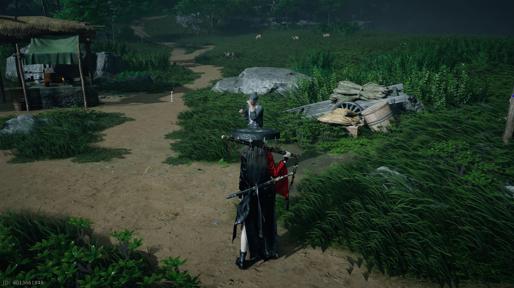
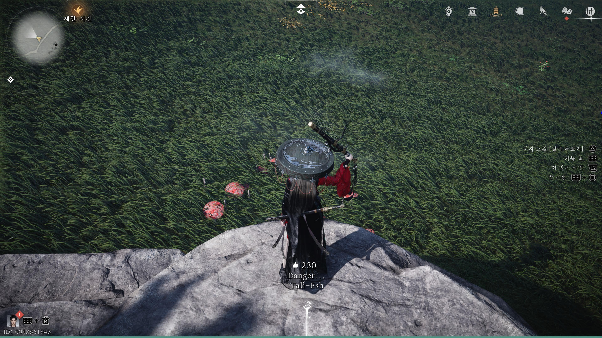
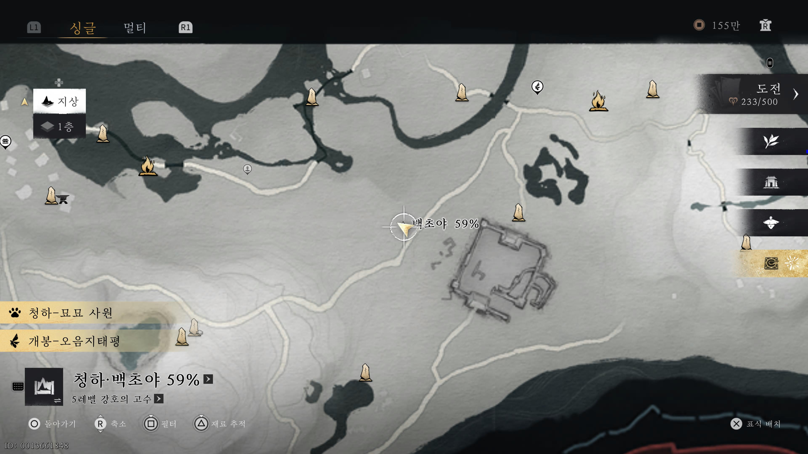
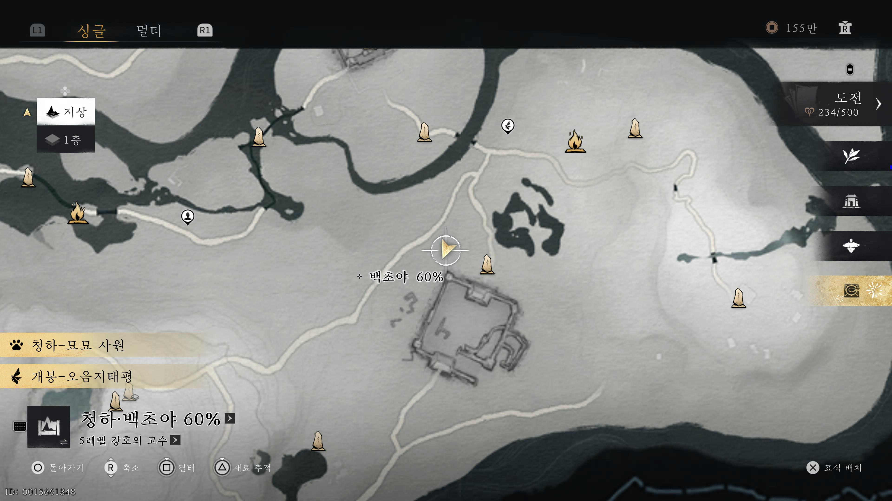
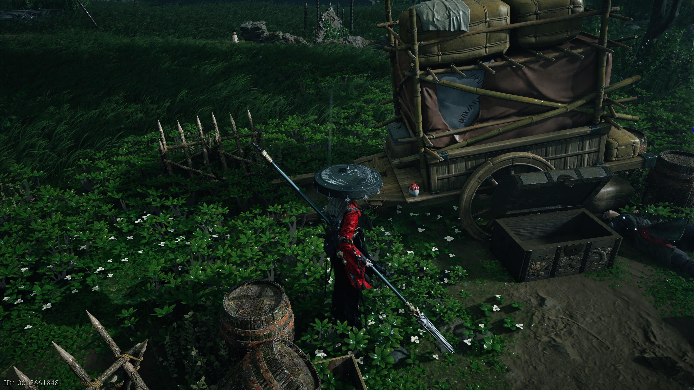
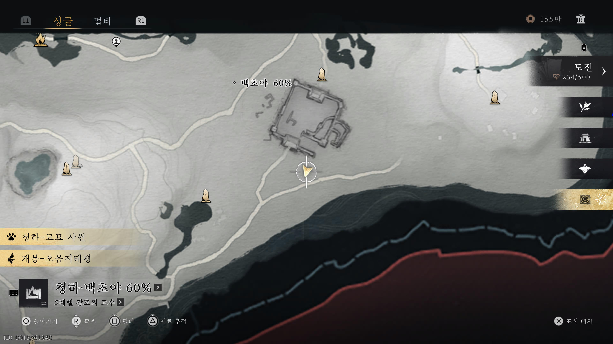

만사록
영령 위로의 말
주씨 할아버지에게 술을 전달하자
📜 퀘스트 개요
이번 퀘스트는 영령에게 바칠 술을 잃어버린 주씨 할아버지를 도와주는 내용입니다.
잃어버린 소지품을 되찾고, 깨진 술병을 대신할 새로운 술을 산적들에게서 구해와야 합니다.
주씨 할아버지와 만남
아래 커서가 있는 위치(칠벌 고개 이름이 있는곳)에 있는 주씨 할아버지와 대화하여 퀘스트를 시작하세요.


축축한 소지품 회수
대화를 마친 후 아래 위치로 이동하세요. 허공 섭물을 이용해 '축축한 소지품'을 획득해야 합니다.
(이미지 상으로는 보이지 않으나, 해당 위치에 뱀 무리가 있으며 그 사이에 소지품이 있습니다.)


산적의 술 구하기
소지품을 전달하면 술병이 모두 깨져있습니다. 할아버지의 부탁으로 산적들에게서 술을 구해와야 합니다.
아래 위치를 참고하여 총 두 개의 술병을 획득하세요.
첫 번째 술 위치


두 번째 술 위치


술을 모두 구했다면 북맹 유적 경계석으로 이동하세요.
그곳에 있는 주씨 할아버지에게 술병을 전달하면
퀘스트는 완료됩니다.